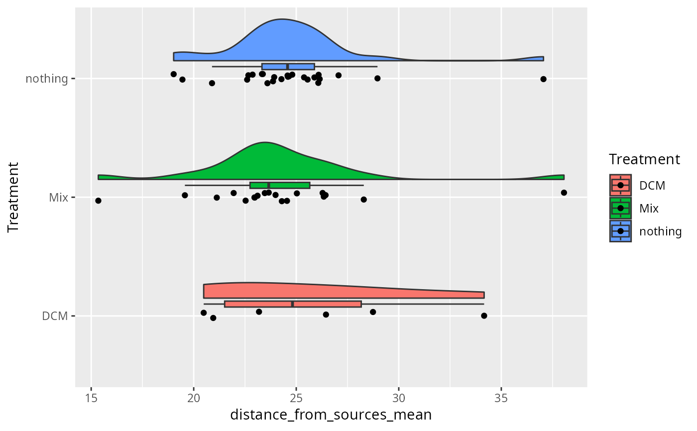
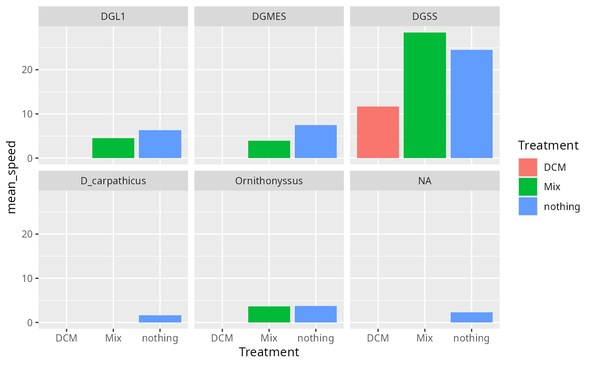

Summarize MiteMap data at the individual (File) level
summarize_mitemap.RdSummarize MiteMap data at the individual (File) level
Arguments
- MiteMap
(required) The result of
import_mitemap()- selected_cols
(default = NULL) A character vector of column names to include in the summary in addition to
File_name. If NULL, all columns are used.
Value
A summary table (tibble) with one line per File_name and summary statistics.
New columns are created with the suffixes corresponding to the applied summary function:
For numeric columns summary statistics include mean, standard deviation, minimum, and maximum values.
For character and factor columns, the first unique value is retained. As file_name (individual mite) have unique metadata, all factor columns have one value by file_name.
For logical columns, the proportion (mean) and number of TRUE values is calculated. The number of FALSE is also calculated.
A column
total_pointsindicates the number of data points (rows) for each File_name.
Details
The returns for the applied summary functions used. If you want custom function such as quantile, median, you can use dplyr functions directly inspired by this function (see examples).
Examples
mm_csv <- suppressWarnings(import_mitemap(
system.file("extdata", "mitemap_example", package = "MiteMapTools"),
file_name_column = "File (mite ID)"
))
#>
#> The final number of samples for folder is 76032.
#> Rows removed when clearing for run with times sup to maximum_time: 0 (0 runs)
#> Rows removed when clearing the first secondes: 603
#> Rows removed when clearing bad x range: 2798 (2 runs)
#> Rows removed when clearing bad y range: 0 (0 runs)
#> Rows removed when clearing bad x values: 1960
#> Rows removed when clearing bad y values: 26
#>
#> Total rows after filtering: 70828 (from 76032)
#> Total runs after filtering: 50 (from 53)
sum_mm <- summarize_mitemap(mm_csv)
dim(sum_mm)
#> [1] 50 94
sum_mm_selected <- summarize_mitemap(mm_csv,
selected_cols = c(
"speed_mm_s",
"distance_from_sources",
"in_left_half_HH",
"in_left_half_CH",
"turning_angle",
"turning_angle_odor",
"turning_angle_ratio_odor",
"Treatment"
)
)
ggplot(sum_mm_selected, aes(x = Treatment, y = distance_from_sources_mean, fill = Treatment)) +
ggrain::geom_rain() +
coord_flip()
#> Registered S3 methods overwritten by 'ggpp':
#> method from
#> heightDetails.titleGrob ggplot2
#> widthDetails.titleGrob ggplot2

# Use custom summary with dplyr functions without the use of summarize_mitemap
mm_csv |>
select("File_name", "Treatment", "Biomol_sp", "speed_mm_s") |>
group_by(File_name) |>
summarise(
mean_speed = mean(speed_mm_s, na.rm = TRUE),
across(where(is.character), ~ unique(.x)[1], .names = "{col}")
) |>
ggplot(aes(x = Treatment, y = mean_speed, fill = Treatment)) +
geom_col() +
facet_wrap(~Biomol_sp)
